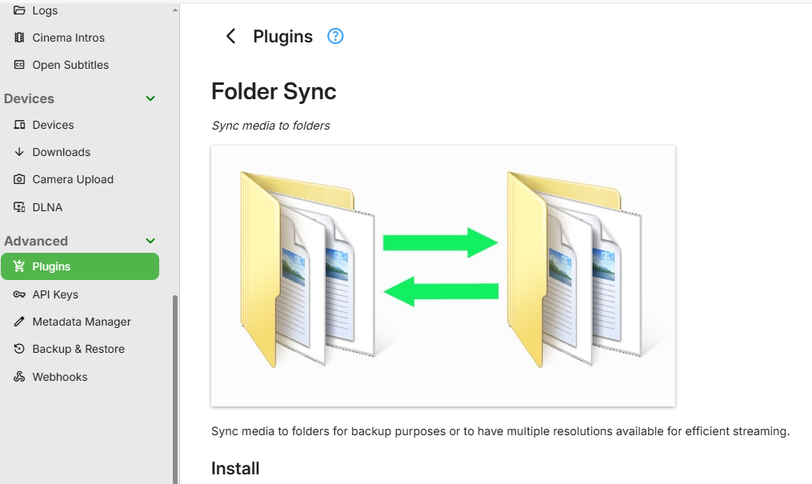
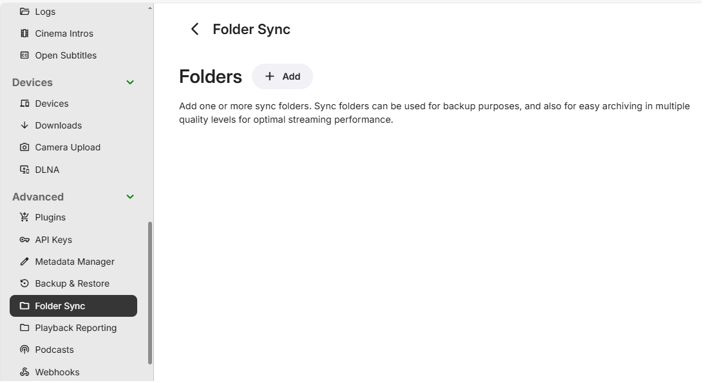
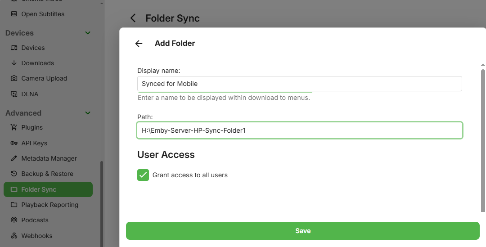
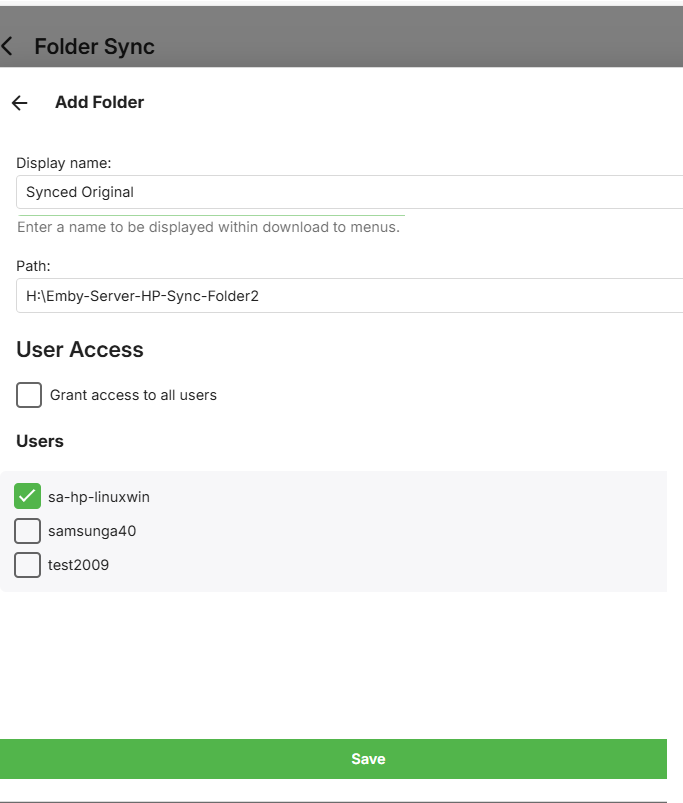
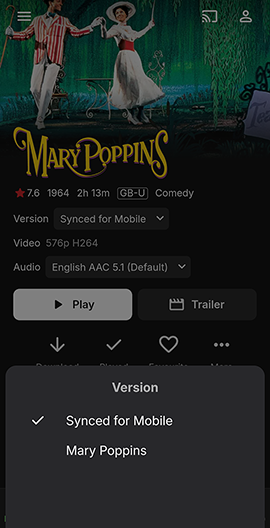

Ordnersynchronisation
Die Ordnersynchronisation ermöglicht es Ihnen, Inhalte in Ordner und externe Festplatten zu kopieren, sowohl zur Sicherung als auch zum Archivieren in mehreren Auflösungen. Dies ist eine Funktion von Emby Premiere.
Wenn Inhalte in mehreren Auflösungen archiviert werden, wählen Emby-Apps automatisch die Version aus, die für sie am effizientesten ist. Dies entlastet die CPU Ihres Servers. Die Verfügbarkeit dieser Versionen hängt von den Berechtigungen ab, die bei der Einrichtung der Ordnersynchronisation gewährt werden.
Installation
Um die Ordnersynchronisation zu installieren, öffnen Sie das Emby Server Dashboard und navigieren Sie zu Erweitert und klicken Sie auf Plugins. Öffnen Sie den Katalog und scrollen Sie nach unten, bis Sie den Sync-Bereich finden. Klicken Sie auf das Folder Sync-Plugin und wählen Sie Installieren. Siehe Plugins Übersicht.

Starten Sie den Emby Server neu, um die Installation des Plugins abzuschließen.
Ordner hinzufügen
Entscheiden Sie, welche Art von Synchronisationsordnern Sie haben möchten. Beispiele wären Synchronisationsordner, die Medien enthalten, die auf eine bestimmte Auflösung konvertiert wurden, z. B. 4Mb für das Streaming auf mobile Geräte, oder ein Ordner, um archivierte Kopien der Medien in Originalauflösung zu speichern. Diese Ziel-Synchronisationsordner können lokale Festplatten oder Netzwerkfreigaben sein. Die Schaltfläche Herunterladen auf..., die in den Kontextmenüs der Medien und Bibliotheken verfügbar ist, wird zum Mechanismus, um die synchronisierten Mediendateien in diesen Ordnerpfaden zu erstellen.
Jeder Synchronisationsordnerpfad muss mit einem Namen versehen werden. Wählen Sie eine Benennung, die Benutzern klar macht, worum es sich handelt. Der Name wird sichtbar sein, wenn Medien zur Wiedergabe ausgewählt werden und auch in den Herunterladen auf... Menüs für Benutzer, die Zugriff auf die Erstellung von Ordnersynchronisationsaufgaben haben.
Klicken Sie auf die Schaltfläche Ordner + Hinzufügen.

Geben Sie den Pfad und den Anzeigenamen ein.

Entfernen Sie das Häkchen bei Zugriff für alle Benutzer gewähren, um anzugeben, welches Benutzerkonto bzw. welche Benutzerkonten berechtigt sind, Ordnersynchronisationsaufgaben zu erstellen, die in diesen Ordner schreiben.

Bereit zum Synchronisieren
Sobald ein Synchronisationsordner hinzugefügt wurde, wird dieser als verfügbares Ziel bei der Erstellung von Downloadaufgaben angezeigt. Das Ziel wird nur für Benutzer angezeigt, denen Zugriff gewährt wurde. Folgendes würde ein Server-Admin-Benutzer auf einem Herunterladen auf... Bildschirm sehen. Siehe Downloadoptionen für weitere Details.

Wiedergabe
Sobald synchronisiert, verwenden Emby-Apps automatisch die zusätzlichen Medienquellen, wann immer möglich. Angenommen, Sie haben beispielsweise einen Film mit hoher Bitrate, der für Roku transkodiert werden muss. Indem Sie in einen Ordner synchronisieren und ein Konvertierungsprofil auswählen, das mit Roku kompatibel ist, kann die Roku-App dann die synchronisierte Version direkt streamen, anstatt die ursprüngliche zu transkodieren.
In diesem Beispiel wurde die Ordnersynchronisation verwendet, um mobile 4Mbps-Versionen einiger Medien zu erstellen. Diese stehen als alternative Versionen zur Wiedergabe zur Verfügung und in diesem Beispiel wurde diese Version automatisch vorgewählt.

Note
Es gibt eine Begrenzung für die Anzahl der verschiedenen Versionen eines Medienelements. Bis zu 8 verschiedene Versionen erscheinen in jeder Liste der Medienelementversionen.